BMSY C semi-automatic double-column band saws
BMSY 330C · BMSY 360C · BMSY 460C · BMSY 560C · BMSY 810C · BMSY 825C · BMSY 1020C
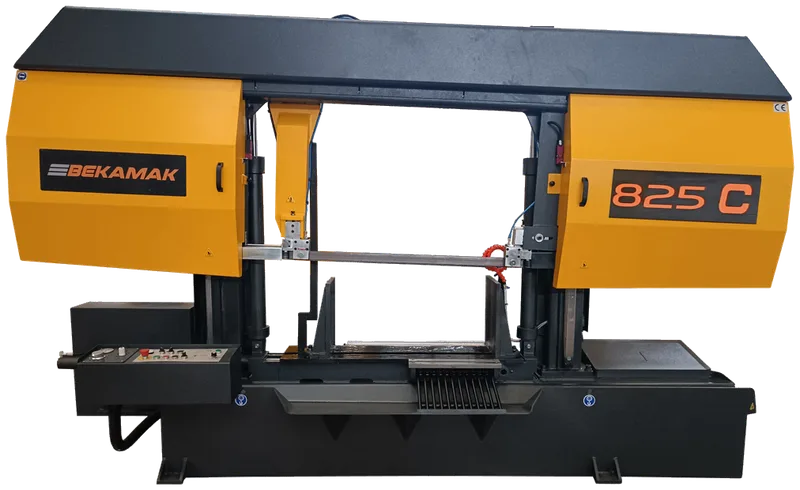
1 / 47-
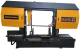
-
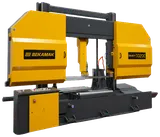
-
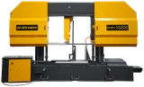
-
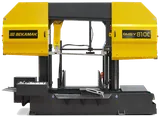
-
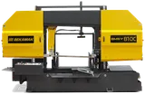
-
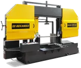
-
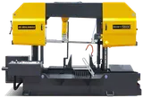
-
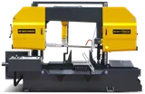
-
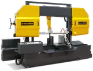
-
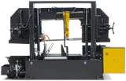
-
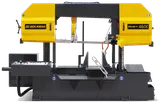
-
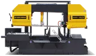
-
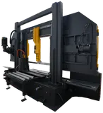
-
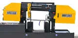
-
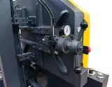
-
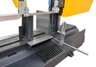
-
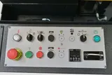
-
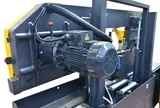
-
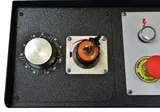
-
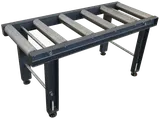
-
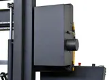
-
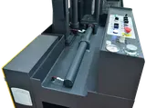
-
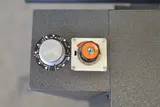
-
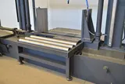
-
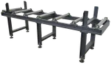
-
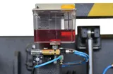
-
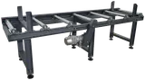
-
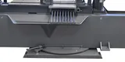
Twin-column saws for straight cutting of heavy bar, billet and bundles from Ø13″ (330 mm) to Ø40-1/8″ (1020 mm). The bow runs on two hardened columns for a rigid, square cut; hydraulic vise, automatic bow return and a 2° inclined blade are standard. SV versions have a split vise for cutting short pieces.
- Double-column guidance with hydraulic vise and automatic bow return
- 2° inclined blade and heavy-duty gearbox for fast, square cuts
- Inverter drive, blade speed 15–120 m/min; hydro-mechanical blade tension
- Cutting-width adjustment lever, blade brush, coolant pump
- Options: split vise (SV), hydraulic top clamping, chip conveyor, roller tables
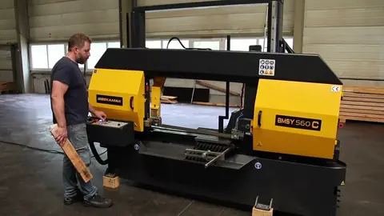
Bekamak BMSY 560C 22″ double-column band saw
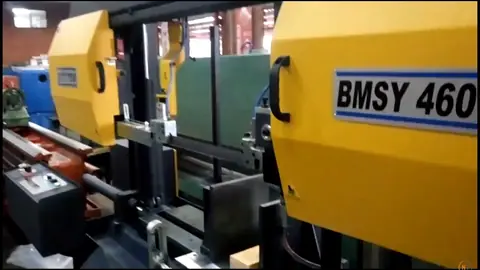
Bekamak BMSY 460C double-column band saw
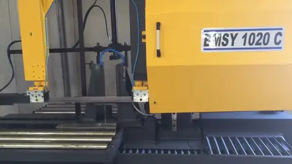
Bekamak BMSY 1020C double-column band saw
| Model | BMSY 330C | BMSY 360C | BMSY 460C | BMSY 560C | BMSY 810C | BMSY 825C | BMSY 1020C |
|---|---|---|---|---|---|---|---|
| Capacity 0° (straight) — round | Ø13″ (330 mm) | Ø15″ (380 mm) | Ø18-1/8″ (460 mm) | Ø22″ (560 mm) | Ø31-7/8″ (810 mm) | Ø32-1/2″ (825 mm) | Ø40-1/8″ (1020 mm) |
| Capacity 0° (straight) — rectangular W × H | 17-3/4″ × 13″ (450 × 330 mm) | 20-1/2″ × 14-5/8″ (520 × 370 mm) | 25-5/8″ × 18-1/8″ (650 × 460 mm) | 29-1/2″ × 21-5/8″ (750 × 550 mm) | 33-1/2″ × 31-1/8″ (850 × 790 mm) | 37-3/8″ × 31-1/8″ (950 × 790 mm) | 40-1/8″ × 40-1/8″ (1020 × 1020 mm) |
| Capacity 0° (straight) — square | 13″ (330 mm) | 14-5/8″ (370 mm) | 18-1/8″ (460 mm) | 21-5/8″ (550 mm) | 31-7/8″ (810 mm) | 31-1/8″ (790 mm) | 40-1/8″ (1020 mm) |
| Capacity +45° right — round | Ø7-7/8″ (200 mm) | Ø10-1/4″ (260 mm) | Ø13-3/8″ (340 mm) | Ø15-3/4″ (400 mm) | Ø18-7/8″ (480 mm) | Ø22″ (560 mm) | Ø23-5/8″ (600 mm) |
| Capacity +45° right — rectangular W × H | 7-7/8″ × 13″ (200 × 330 mm) | 10-1/4″ × 14-5/8″ (260 × 370 mm) | 13-3/8″ × 18-1/8″ (340 × 460 mm) | 15-3/4″ × 21-5/8″ (400 × 550 mm) | 18-7/8″ × 31-1/8″ (480 × 790 mm) | 22″ × 31-1/8″ (560 × 790 mm) | 23-5/8″ × 40-1/8″ (600 × 1020 mm) |
| Capacity +45° right — square | 7-7/8″ (200 mm) | 10-1/4″ (260 mm) | 13-3/8″ (340 mm) | 15-3/4″ (400 mm) | 18-7/8″ (480 mm) | 22″ (560 mm) | 23-5/8″ (600 mm) |
| Blade speed | 49–394 ft/min (15–120 m/min) | 49–394 ft/min (15–120 m/min) | 49–394 ft/min (15–120 m/min) | 49–394 ft/min (15–120 m/min) | 49–394 ft/min (15–120 m/min) | 49–394 ft/min (15–120 m/min) | 49–394 ft/min (15–120 m/min) |
| Band blade L × W × T | 197 × 1-1/4 × .042 in (5000 × 34 × 1.1 mm) | 204-1/2 × 1-1/4 × .042 in (5200 × 34 × 1.1 mm) | 226-1/2 × 1-1/2 × .050 in (5750 × 41 × 1.3 mm) | 236 × 1-1/2 × .050 in (6000 × 41 × 1.3 mm) | 323 × 1-1/2 × .050 in (8200 × 41 × 1.3 mm) | 330-1/2 × 2 × .063 in (8400 × 54 × 1.6 mm) | 382 × 2 × .063 in (9700 × 54 × 1.6 mm) |
| Main motor | 4 HP (3 kW) | 4 HP (3 kW) | 5.4 HP (4 kW) | 5.4 HP (4 kW) | 7.4 HP (5.5 kW) | 10 HP (7.5 kW) | 10 HP (7.5 kW) |
| Hydraulic motor | 0.7 HP (0.55 kW) | 0.7 HP (0.55 kW) | 0.7 HP (0.55 kW) | 1.5 HP (1.1 kW) | 2 HP (1.5 kW) | 2 HP (1.5 kW) | 3 HP (2.2 kW) |
| Coolant pump | 0.2 HP (0.12 kW) | 0.2 HP (0.12 kW) | 0.2 HP (0.12 kW) | 0.2 HP (0.12 kW) | 0.2 HP (0.12 kW) | 0.2 HP (0.12 kW) | 0.2 HP (0.12 kW) |
| Chip Conveyor Motor | — | — | — | — | — | 0.3 HP (0.25 kW) | — |
| Chip Conveyor Motor (optional) | — | — | — | — | — | — | 0.3 HP (0.25 kW) |
| Working height | 22-1/2″ (575 mm) | 22-1/2″ (575 mm) | 23″ (585 mm) | 23″ (585 mm) | 23″ (585 mm) | 23-1/2″ (600 mm) | 23-1/2″ (600 mm) |
| Weight | 2,535 lb (1150 kg) | 2,932 lb (1330 kg) | 3,351 lb (1520 kg) | 4,409 lb (2000 kg) | 6,790 lb (3080 kg) | 7,275 lb (3300 kg) | 14,771 lb (6700 kg) |
| Dimensions L × W × H | 106 × 47 × 67 in (2700 × 1200 × 1700 mm) | 106 × 47 × 65 in (2700 × 1200 × 1660 mm) | 118 × 47 × 71 in (3000 × 1200 × 1800 mm) | 128 × 55 × 83 in (3250 × 1400 × 2100 mm) | 154 × 55 × 107 in (3900 × 1400 × 2720 mm) | 154 × 50 × 107 in (3900 × 1270 × 2720 mm) | 177 × 59 × 126 in (4500 × 1500 × 3200 mm) |
| Voltage | 600 V 3-phase (208/240/480 V on request) | 600 V 3-phase (208/240/480 V on request) | 600 V 3-phase (208/240/480 V on request) | 600 V 3-phase (208/240/480 V on request) | 600 V 3-phase (208/240/480 V on request) | 600 V 3-phase (208/240/480 V on request) | 600 V 3-phase (208/240/480 V on request) |
Capacities are the largest stock the saw passes at the stated angle, converted from the manufacturer's metric data and rounded to the nearest 1/8″. Blade size is length × width × thickness. Three-phase machines are supplied for 600 V; 208 V, 240 V or 480 V 3-phase available on request.